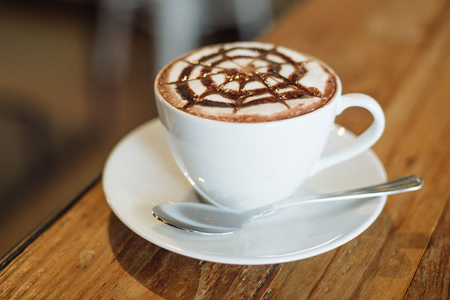

|
|
|
| ESCENARIO DEL CAFÉ |

|
 |

|

|
| Café Americano | Café Capuchino | Café Cortado | Café Ltte |
Descargar Brouche
Beneficios:
| 1. Rico en antioxidante | 4. Contra el dolor de cabeza |
| 2. Activa la mente | 5. Combate el alzheimer |
| 3. Contribuye a la pérdida de peso | 6. Es bueno para el corazón |
| VILLA EL SALVADOR | NORTE |